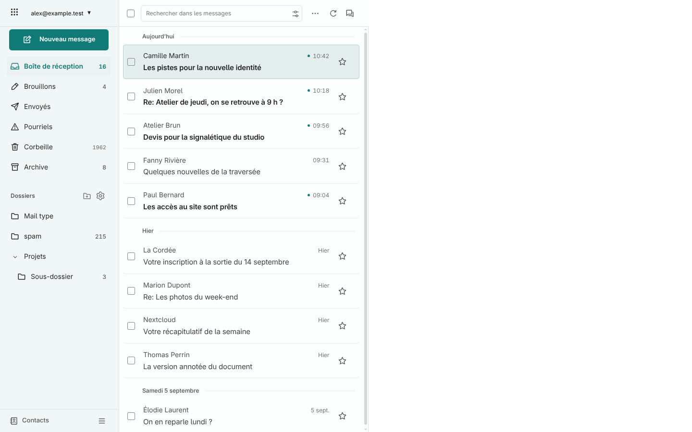
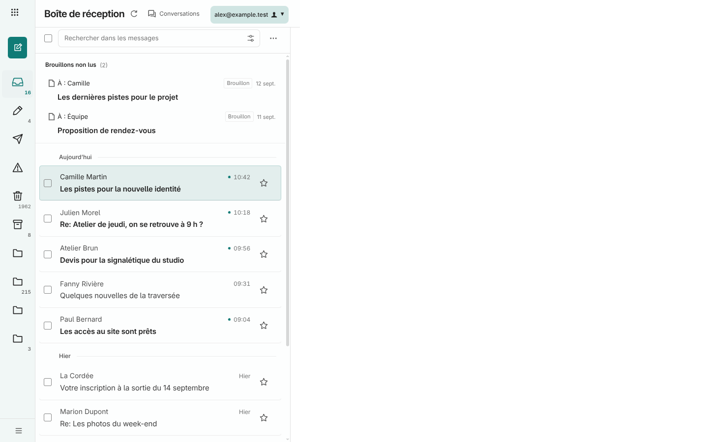

La liste distingue doucement les mails et ses cases à cocher sont alignées avec la case du haut. Quand les dossiers sont repliés, leur rail retrouve 72 px.


La version mobile reste inchangée : capture de 390 px identique au pixel près à la 1.7.12.